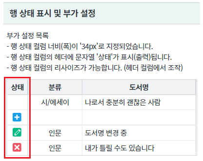
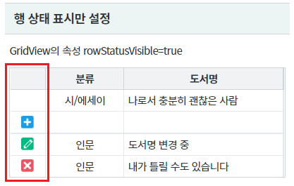
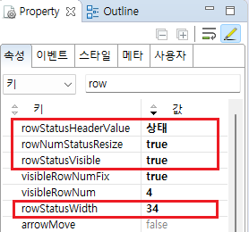
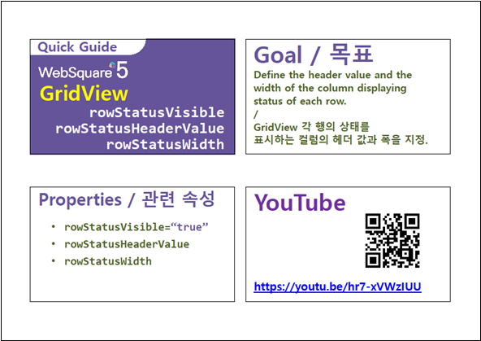

GridView의 행 상태 컬럼의 부가 기능 설정 예시입니다. 예제에 설정한 기능은 속성 rowStatusVisible(행 상태 표시 설정)이 true로 지정되어야 동작합니다.
아래 목록은 적용 속성별 설명입니다. - rowStatusVisible : 행의 상태(추가/수정/삭제) 컬럼을 표시 - rowNumStatusResize : 행 상태 컬럼의 리사이즈 가능 여부 지정 - rowStatusHeaderValue : 행 상태 컬럼의 헤더의 출력 값(레이블) 지정 - rowStatusWidth : 행 상태 컬럼 너비(폭) 지정
행 상태 표시 및 부가 기능 설정
행 상태 표시만 설정
행의 상태별 아이콘을 확인하기 위해 화면 로딩 후 스크립트(행 추가, 행 삭제, 값 변경)가 작성되었습니다.
영역 [행 상태 표시 및 부가 설정]의 GridView를 확인합니다.
- 첫 번째 컬럼에 행 상가 표시됩니다.
- 행 상태 컬럼 너비(폭)이 '34px'로 지정되었습니다.
- 행 상태 컬럼의 헤더에 문자열 '상태'가 표시(출력)됩니다.
- 행 상태 컬럼의 리사이즈가 가능합니다. (헤더 컬럼에서 조작)
[브라우저(Chrome) 실행 예시]

행의 상태별 아이콘을 확인하기 위해 화면 로딩 후 스크립트(행 추가, 행 삭제, 값 변경)가 작성되었습니다.
영역 [행 상태 표시만 설정]의 GridView를 확인합니다.
첫 번째 컬럼에 행 상태가 표시됩니다.
[브라우저(Chrome) 실행 예시 - 행 상태 표시]

STEP1. GridView의 속성을 정의합니다.
[필수] rowStatusVisible="true" //[default:false, true] 행 상태 표시 여부
[선택] rowNumStatusResize="true" //[default:false, true] 행 번호 컬럼의 리사이즈 가능 여부 지정
[선택] rowStatusHeaderValue="상태" //행 상태 컬럼의 헤더의 출력 값(레이블) 지정
[선택] rowStatusWidth="34" //행 상태 컬럼 너비(폭) 지정
그림 1.웹스퀘어5 SP5 스튜디오의 Property View(속성창) 예시

[소스 코드 예시]
<!-- gridView 의 소스 본문 예시 --> <w2:gridView rowNumStatusResize="true" rowStatusHeaderValue="상태" rowStatusVisible="true" rowStatusWidth="34" dataList="data:dlt_books_1" style="height: 100px;"> <!-- 중략 --> </w2:gridView>
rowStatusVisible
rowStatusHeaderValue
rowStatusWidth
rowNumStatusResize
setRowStatusColumnWidth( size )
[웹스퀘어5 SP5 개발 가이드] GridView
링크 : https://docs1.inswave.com/sp5_user_guide/bc10c1b82c9a2a0b#e1c4658baf7e726f
[웹스퀘어5 SP5 개발 가이드] GridView 행 번호 및 행 상태
링크 : https://docs1.inswave.com/sp5_user_guide/86bdcf48029b958b#206ac331977998e6
[웹스퀘어5 SP5 개발 가이드] GridView 행 상태 표시 컬럼의 헤더 값과 폭 지정
링크 : https://docs1.inswave.com/sp5_user_guide/86bdcf48029b958b#25cdb0a4d6a12550
GridView 행 상태 표시 컬럼의 헤더 값과 폭 지정
링크 : https://youtu.be/hr7-xVWzIUU
